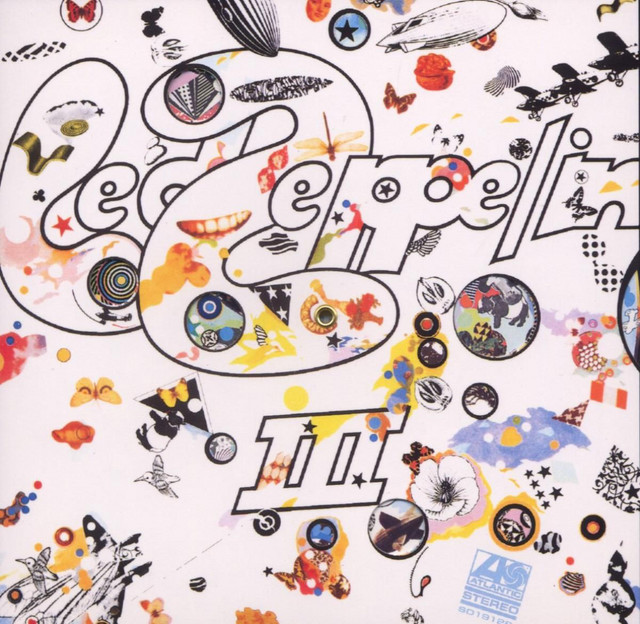

Working from seven to eleven every night
It really makes life a drag, I don't think that's right
I've really, been the best, the best of fools
I did what I could, yeah
'Cause I love you, baby
How I love you, darling
How I love you, baby
How I love you, girl, little girl
Baby, since I've been loving you, yeah
I'm about to lose my worried mind, oh yeah
Everybody trying to tell me
That you didn't mean me no good
I've been trying, Lord, let me tell you
Let me tell you I really did the best I could
I've been working from seven to eleven every night
I said it kinda makes my life a drag, drag, drag, drag,
Lord, that ain't right
Since I've been loving you
I'm about to lose my worried mind
Said I've been crying, my tears they fell like rain
Don't you hear, don't you hear them falling
Do you remember, mama, when I knocked upon your door?
I said you had the nerve to tell me
you didn't want me no more, yeah
I open my front door,
hear my back door slam
You must have one of them new fangled back door man
I've been working from seven, seven, seven,
to eleven every night
It kinda makes my life a drag, drag, drag
Baby, since I've been loving you
I'm about to lose, I'm about lose to my worried mind
TEXTO STRONG (NEGRITO)
TEXTO PEQUENO
TEXTO ITÁLICO
SUBTEXTO
SOBRETEXTO